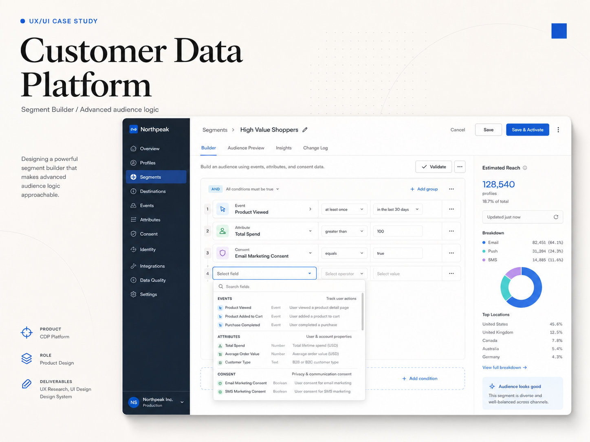

Outcome
Dev- & QA-ready specs
The hardest query logic in the system had to feel like the easiest screen — so marketers could nest conditions three levels deep and still trust the audience it resolved to.

The hard part wasn't showing more data. It was turning layered logic into a workspace marketers could read, configure and trust.
A marketer could build a segment, nest AND/OR groups two or three levels deep, and still miss that the logic quietly resolved to zero people. The interface already existed. It worked. But "works" and "works confidently" are different things.
Visible condition groups, clear operator blocks, and an estimated-reach panel — so the user understood the segment as it was being assembled.
— readable first, complete second


A categorized auto-complete selector with metadata visible in each result row — so users could verify a condition before adding it to the segment.
— verify before you commit
"The riskiest moment in this tool is invisible — an empty campaign that goes out to nobody."
What I'd do differently